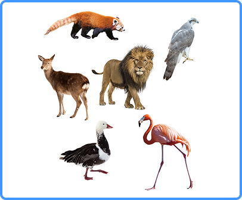
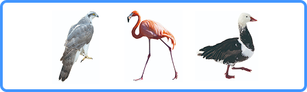

개념 학습
기계학습의 유형
비지도학습
비지도학습은 레이블(정답)이 없는 데이터를 이용하여 그 데이터의 숨은 의도나 패턴을 찾아내는 방식이다. 데이터를
비슷한 특성을 갖는 그룹끼리 묶음(군집화)으로써 데이터의 구조와 특성을 더 잘 파악할 수 있다. 비지도학습은 고객의 구매 패턴을 분석하여 상품 추천, 유사한 그룹이나 범주를 발견하여 새로운 아이디어를 얻는 데 활용할 수 있다.
비지도학습: 군집화 예시
레이블 없이 입력된 이미지를 학습하여 비슷한 특징을 갖는 서로 다른 두 군집으로 묶는다.
-
 레이블이 없는 학습 데이터
-
학습
- 군집 모델
-
군집 1군집 2
-
날개가 없고 다리가 4개인 동물들 날개가 있고 다리가 2개인 동물들